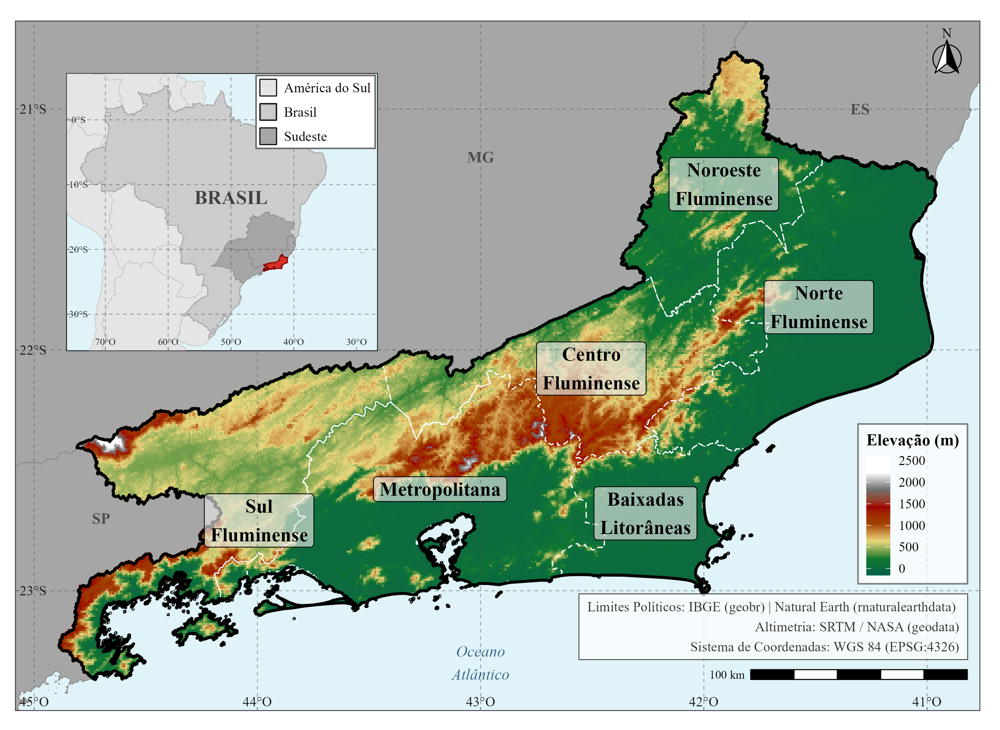
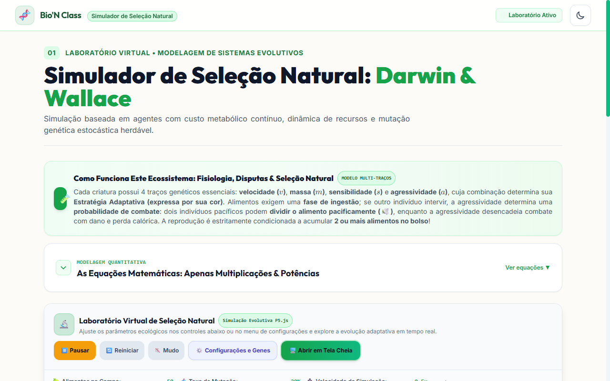
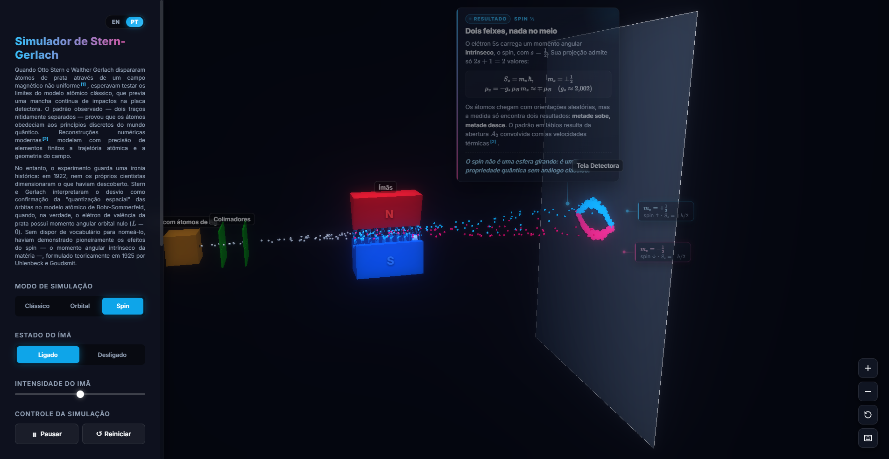
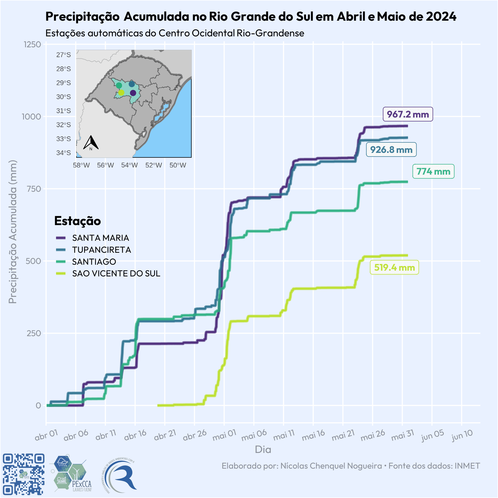
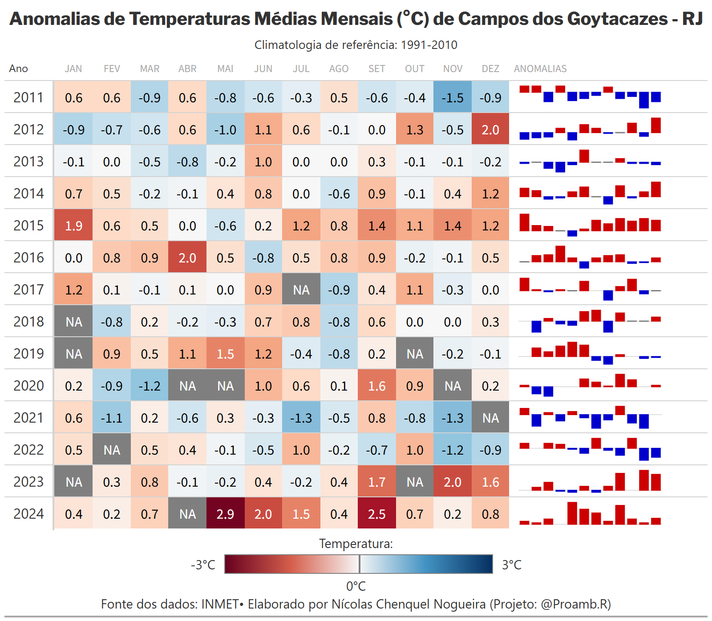
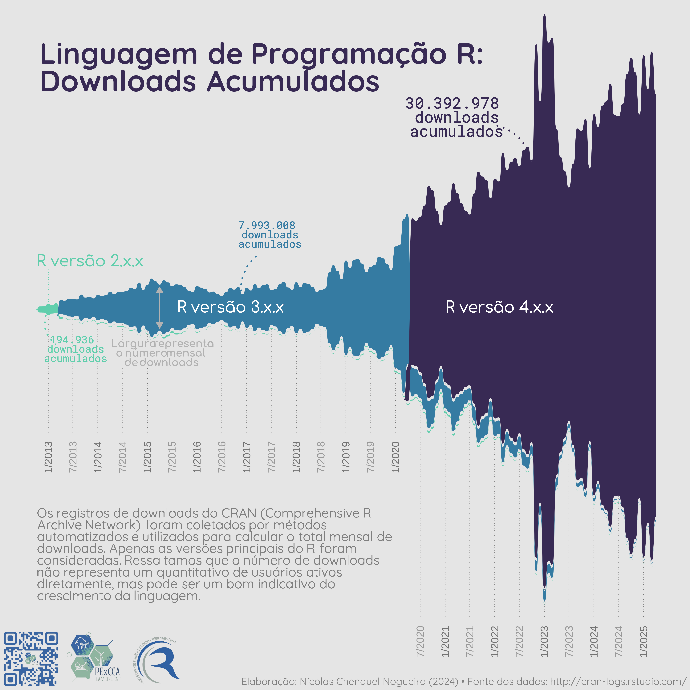
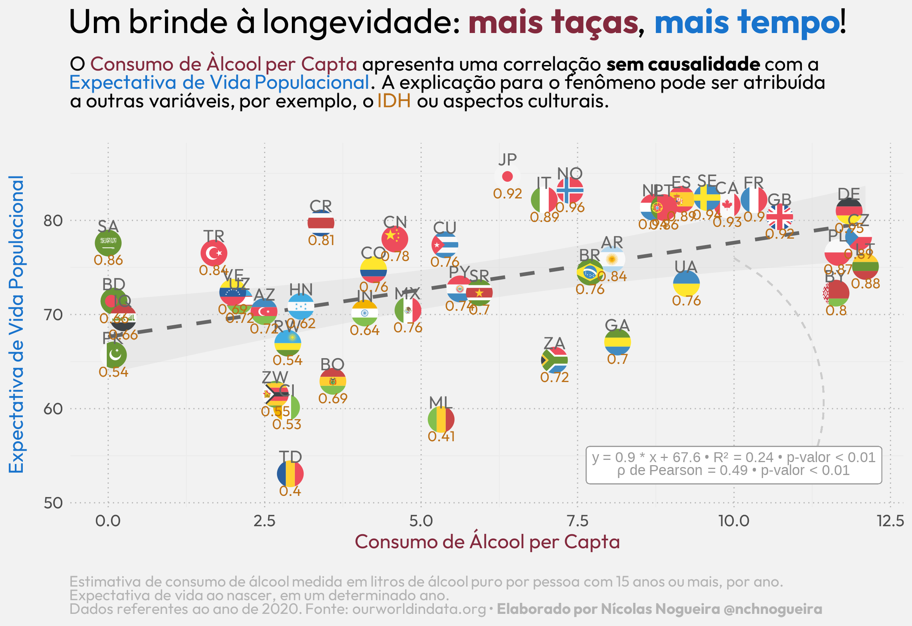

Ciência de Dados
Pipelines end-to-end em R e Python, DuckDB para dados out-of-memory, séries temporais, PCA, clustering e dashboards em Shiny.
Mestrando em Ciências Naturais (UENF) · Licenciado em Ciências Biológicas (UFRJ)
Transformo dados ambientais complexos em análises reprodutíveis, ferramentas interativas e material didático. Atuo na interseção entre estatística, climatologia, desenvolvimento web e ensino de ciências.
Pipelines end-to-end em R e Python, DuckDB para dados out-of-memory, séries temporais, PCA, clustering e dashboards em Shiny.
ERA5-Land, CHIRPS v3, INMET e ANA. SPI/SPEI, índices ETCCDI, Mann-Kendall, Sen, teleconexões ENSO e geoprocessamento com terra, sf e QGIS.
JavaScript, p5.js, Three.js/WebGL, Tailwind, FastAPI e CI/CD com GitHub Actions para aplicações científicas e educacionais.
Docência em Ciências, Química, Estatística e Informática. PBL, STEAM, livro didático premiado e minicursos de R.

Extração zonal de ERA5-Land e CHIRPS v3 para os 92 municípios fluminenses, com normais, anomalias, SPI/SPEI e testes de tendência (Mann-Kendall e Sen). Processamento colunar com DuckDB e Parquet.
R (terra, sf, exactextractr) · Python · DuckDB · Google Earth Engine
Repositório
Aulas interativas de Biologia, Química e Física no navegador: seleção natural baseada em agentes, genética mendeliana estocástica, balística, foguetes e quizzes com correção instantânea. Funciona offline.
JavaScript · p5.js · Tailwind · KaTeX · GitHub Actions · Pages
Repositório
Simulação interativa em WebGL sobre a quantização do spin de átomos de prata em campo magnético não homogêneo, com interface em glassmorphism. Desenvolvido na disciplina do mestrado.
Three.js · WebGL · JavaScript · CSS3
Aplicativo web interativo do LAMET/UENF para visualizar dados de estações meteorológicas, com mapa dinâmico em Leaflet, filtros temporais e exportação de relatórios.
R · Shiny · Leaflet · Tidyverse
Abrir aplicativo
Oito índices ETCCDI (1961-2023, estação INMET 83698) com Mann-Kendall e estimador de Sen. Resultados significativos (p<0,05): TNn +0,19 °C/década, TNx +0,25 °C/década, TXn +0,28 °C/década e TN90p +1,62 dias/década.
R · ETCCDI · Mann-Kendall · Sen

Evolução temporal da precipitação acumulada por mesorregião a partir de 43 estações automáticas do INMET, com animação e geoprocessamento.
R · gganimate · sf

Desvios mensais em relação à normal 1981-2010. Em 2024, todos os meses com dado válido apresentaram anomalia positiva.
R · tidyverse · gt

ETL paralelo de 4.569 arquivos diários de log (1,7 GB) com future.apply. Tempo reduzido de cerca de 3 h para cerca de 50 min. Visualização em Sankey com ggsankey.
R · future.apply · ggsankey

Correlação de Spearman moderada (ρ = 0,49; p<0,01) em 45 países, com IDH como fator relevante. Correlação não implica causalidade.
R · ggplot2 · ggflags
Dissertação em andamento (UENF/LAMET, orientação da Profa. Dra. Eliane B. Santos): monitoramento de extremos climáticos, secas e teleconexões ENSO no estado do Rio de Janeiro.
Bolsista CAPES. Climatologia e monitoramento de extremos no RJ.
Manutenção do MeteoRApp, oficinas de R e divulgação científica.
Criação do MeteoRApp e pipelines com dados do INMET. Premiado na XVI Mostra de Extensão.
Monitoria, PIBID e extensão.
Idiomas: Português (nativo) e Inglês (avançado).